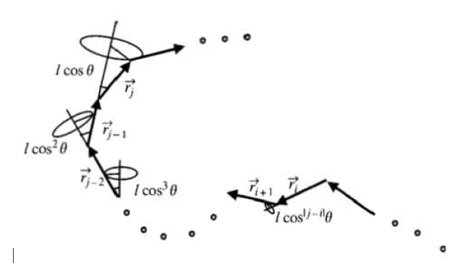
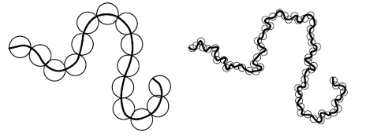
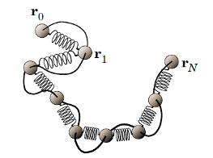
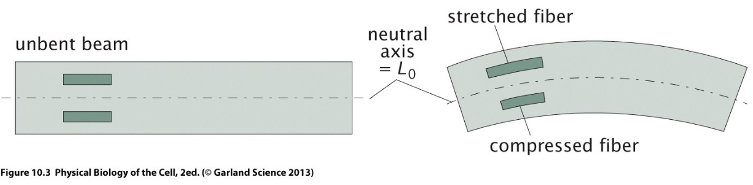
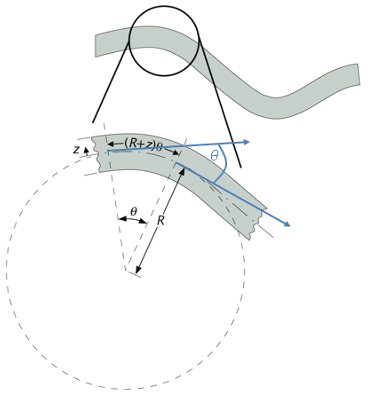

import numpy as np
import matplotlib.pyplot as plt
from numpy.linalg import norm
from scipy.constants import c,epsilon_0,e,physical_constants
import json
%config InlineBackend.figure_format = 'retina'
with open('style.json', 'r') as fp:
style = json.load(fp)
plt.rcParams.update(style) 28 Ideal Polymer Models
28.1 Freely Rotating Chain

\[ \left\langle\vec{r}_i \cdot \vec{r}_j\right\rangle=l^2(\cos \theta)^{|j-i|} \]
\[ \left\langle R^2\right\rangle=\sum_{i=1}^n \sum_{j=1}^n\left\langle\vec{r}_i \cdot \vec{r}_j\right\rangle \]
\[ \left\langle R^2\right\rangle=n l^2+2 n l^2 \frac{\cos \theta}{1-\cos \theta}=n l^2 \frac{1+\cos \theta}{1-\cos \theta} \]
\[ C_{\infty}=\frac{1+\cos \theta}{1-\cos \theta} \cong 2 \]
28.2 Gaussian Chain
We have previously seen that in the limit of N → ∞ all ideal chains become identical and follow the normal distribution as long as each step of the random walk for the chain conformation satisfies that it is uncorrelated with the previous step. A generalization of this concept is the Gaussian chain, which no longer considers the exact Kuhn segment length, but divides a long chain into equal flexible segments of arbitrary length:

In this case, the “segment length” b is not a real length, but the ends of a segment have a square end-to-end distance of b. The end-to-end distance of a segment is also no longer fixed/rigid. Instead, the end-to-end vector of each segment is determined by the Gaussian probability distribution for an ideal chain:
\[ p\left(\vec{r}_i ; N\right)=\left(\frac{3}{2 \pi b^2}\right)^{\frac{3}{2}} e^{-3\left|\vec{r}_i\right|^2 /\left(2 b^2\right)} \]
with a variance of b2. The probability distribution for the end-to-end vector of the whole chain containing N Gaussian chain segments is according to the central limit theorem again Gaussian distributed and has N times the single segment variance:
\[ \left\langle R_N{ }^2\right\rangle=N \cdot b^2 \]
Let us now consider that each segment is composed of n smaller Gaussian chain segments with root-mean-squared end-to-end distance of b0. In this case the mean squared end-to-end distance of the large Gaussian segments is given as:
\[ b^2=n b_0^2 \]
The mean-squared end-to-end distance of the whole chain is then given as:
\[ \left\langle R_N{ }^2\right\rangle=\underbrace{N \cdot n}_{n_0} \cdot b_0{ }^2 \]
with n0 being the total number of small Gaussian chain segments in the whole chain, i.e. which is the expected result when using small segements for the whole chain. This shows that ideal chains are self-similar (one also calls this the fractal nature), i.e. the length range of the compartmentalization does not matter and provides the same result for small and large compartments. Using this approach the contour length of the whole chain remains however undefined.
One can represent the Gaussian chain also as a bead-spring model, where each spring has the spring constant k of an entropic spring:
\[ \vec{f}_i=\underbrace{\frac{3 k_B T}{b^2}}_k\left\langle\vec{r}_i\right\rangle \]
The total free energy of the chain is then given by the elastic (entropic) spring energy as well as its configurational entropy.

The Gaussian chain model can be applied as long as each Gaussian segment can be approximated by the Gaussian statistics.
28.3 Wormlike Chain
Many polymers, especially biological filaments, are often freely articulated and there are no single discrete bond angles leading to the chain conformations. Such polymers are called semiflexible polymers or wormlike chains because they appear stiff on short length scales but flexible on long length scales due to the L3 dependence of the deflection of a cantilevered beam under load:

\[ \varepsilon(z)=\frac{L(z)-L(0)}{L(0)}=\frac{(R+z) \theta-R \theta}{R \theta}=\frac{z}{R} \]
\[ \kappa(s)=\frac{1}{R(s)}=\left|\frac{d \theta}{d s}\right| \]
\[ W(\varepsilon)=\frac{1}{2} E \varepsilon^2 \]

\[ d E_{\text {bend }}=d s \int_{\delta \Omega} d A \cdot W(\varepsilon)=d s \int_{\delta \Omega} d A \frac{E}{2} \varepsilon(z)^2=d s \int_{\delta \Omega} d A \frac{E}{2 R(s)^2} z^2 \]
\[ d E_{\text {bend }}=d s \frac{E I}{2 R(s)^2} \]
\[ I=\int_{\delta \Omega} d A \cdot z^2 \]
\[ \begin{array}{lc} \hline \hline \text { Shape } & \text { Second moment } I \\ \hline \text { Solid cylinder (radius } r \text { ) } & \frac{\pi}{4} r^4 \\ \text { Hollow cylinder (outer radius } r_2, \text { inner radius } r_1 \text { ) } & \frac{\pi}{4}\left(r_2^4-r_1^4\right) \\ \text { Ring-like filament of } n \text {-cylinders each with radius } r \text { (e.g. microtubule) } & \left(\frac{2}{\pi^2} n^3+n\right) \frac{\pi}{4} r^4 \\ \hline \end{array} \]
Persistence Length
Now let us consider thermal fluctuations of a short semi-flexible beam segment of length Δs in 2D(within a plane). Its mean bending energy is given by the equipartition theorem as, since the fluctuations have only one degree of freedom:
\[ \left\langle\Delta E_{\text {bend }}\right\rangle=\left\langle\Delta s \frac{E I}{2}\left(\frac{\Delta \theta}{\Delta s}\right)^2\right\rangle=\frac{E I}{2} \frac{\left\langle\Delta \theta^2\right\rangle}{\Delta s}=\frac{1}{2} k_B T \]
i.e. the mean-squared angular displacement is given as:
\[ \left\langle\Delta \theta^2\right\rangle=\frac{k_B T}{E I} \cdot \Delta s=\frac{\Delta s}{p} \quad \text { if } \Delta \theta^2 \ll 1 \]
It is proportional to the beam length, i.e. longer beams appear more flexible. The fraction in the central equation defines an inverse length based on kT and the beam material and shape parameters. We call the ratio:
\[ p=\frac{E I}{k_B T} \]
persistence length p, that provides the a measure of the flexural rigidity per length of the beam balanced by the thermal fluctuations.
Let us describe the deflection of the tangent angles over larger length scales. i.e. Δs may be larger than p. Instead of the mean angular displacement we take the tangent-tangent correlation function as descriptor:
\[ g(s)=\langle\vec{t}(s) \cdot \vec{t}(0)\rangle=\langle\cos \theta(s)\rangle \]
\[ \Delta\langle\cos \theta(s)\rangle=\frac{d\langle\cos \theta(s)\rangle}{d s} \Delta s=\langle\cos \underbrace{\theta(s+\Delta s)}_{\theta(s)+\Delta \theta}-\cos \theta(s)\rangle \]
\[ \Delta\langle\cos \theta(s)\rangle=\underbrace{\langle\cos \theta \cos \Delta \theta-\sin \theta \sin \Delta \theta\rangle}_{\langle\cos \theta\rangle\langle\cos \Delta \theta\rangle-\underbrace{\sin \theta\rangle \sin \Delta \theta\rangle}_0}-\langle\cos \theta(s)\rangle=\langle\cos \theta(s)\rangle(\langle\cos \Delta \theta\rangle-1) \]
\[ \Delta \theta\langle\cos \Delta \theta\rangle \approx 1-\left\langle\Delta \theta^2\right\rangle / 2 \]
\[ \frac{d\langle\cos \theta(s)\rangle}{d s} \Delta s=\langle\cos \theta(s)\rangle \frac{\left\langle\Delta \theta^2\right\rangle}{2}=\langle\cos \theta(s)\rangle \frac{\Delta s}{2 p} \]
\[ \int_1^{\langle\cos \theta(s)\rangle} \frac{d\langle\cos \theta(s)\rangle}{\langle\cos \theta(s)\rangle}=\int_0^s \frac{d s}{2 p} \]
\[ \langle\cos \theta(s)\rangle=e^{-s / 2 p} \]
In 3D we have an additional degree of freedom for the angular fluctuations, such that the mean-squared angular deflection for a short segment is twice as large. In 3D the tangent correlation function thus becomes:
\[ \langle\vec{t}(s) \cdot \vec{t}(0)\rangle=e^{-s k_B T I(E I)}=e^{-s / p} \]
i.e. the persistence length provides the distance scale at which the correlation between the tangent angles decays. The persistence length thus defines the length over which a polymer is still remaining rigid.
Mean-square end-to-end distance of a long semiflexible chain (worm-like-chain)
\[ \mathbf{R}=\int_0^L \mathrm{~d} s \mathbf{t}(s) \]
\[ \left\langle\mathbf{R}^2\right\rangle=\left\langle\int_0^L \mathrm{~d} s \mathbf{t}(s) \cdot \int_0^L \mathrm{~d} u \mathbf{t}(u)\right\rangle \]
\[ \begin{aligned} \left\langle\vec{R}^2\right\rangle & =\left\langle\int_0^L d s \int_0^L d u \vec{t}(s) \cdot \vec{t}(u)\right\rangle \\ & =\int_0^L d s \int_0^L d u \cdot e^{-|u-s| / p} \\ & =2 \int_0^L d s \int_s^L d u \cdot e^{-(u-s) / p} \\ & =2 \int_0^L d s \int_0^{L-s} d x \cdot e^{-x / p} \\ & =2 p \int_0^L d s\left(1-e^{-(L-s) / p}\right) \end{aligned} \]
\[ \left\langle\vec{R}^2\right\rangle=2 p L\left[1-\frac{p}{L}\left(1-e^{-L / p}\right)\right] \]
\[ \left\langle R_G^2\right\rangle=\frac{1}{6}\left\langle\vec{R}^2\right\rangle=\frac{1}{6} L b \]
\[ \left\langle R_G^2\right\rangle=\frac{1}{3} L p \]
\[ \begin{array}{lccc} \hline \hline \text { Organism } & \text { genome length in bp } & R_G \text { in } \mu \mathrm{m} & \text { compartment size in } \mu \mathrm{m} \\ \hline \lambda \text {-phage } & 50,000 & 0.5 & 0.1 \text { (capsid) } \\ E . \text { coli } & 6 \cdot 10^6 & 6.8 & 1 \\ \text { H.sapiens } & 6 \cdot 10^9 & 200 & \text { few } \mu \mathrm{m} \text { (nucleus) } \\ \hline \end{array} \]
Force-extension relation of a worm-like chain!
\[ F=\frac{k_B T}{p}\left[\frac{1}{4\left(1-z / L_0\right)^2}+\frac{z}{L}-\frac{1}{4}\right] \]
Adding elastic stretching to entropic force-extension behavior
\[ \frac{z_{\text {total }}}{L_0}=\frac{z_{\text {entr }}}{L_0}+\frac{z_{\text {elastic }}}{L_0}=\frac{z_{\text {entr }}}{L_0}+\frac{F}{S} \]
\[ \left\langle z_{\text {total }}\right\rangle=L_0\left[\operatorname{coth}\left(\frac{a F}{k_B T}\right)-\frac{k_B T}{a F}+\frac{F}{S}\right] \]
\[ F=\frac{k_B T}{p}\left[\frac{1}{4\left(1-z / L_0+F / S\right)^2}+\frac{z}{L}-\frac{F}{S}-\frac{1}{4}\right] \]